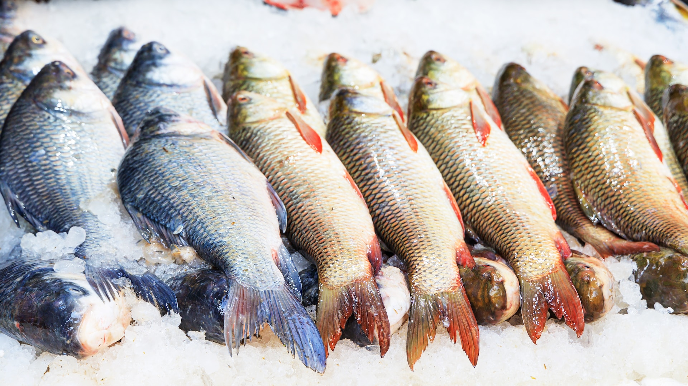

Welcome to Penguin Bistre,

the ultimate culinary experience in the heart of the South Pole! Dive into a world of exquisite flavors and let our skilled penguin chef tantalize your taste buds with their creative creations. From freshly caught seafood delicacies to refreshing ice-cold drinks, our restaurant offers a one-of-a-kind dining adventure in an enchanting icy setting.
To see our menu